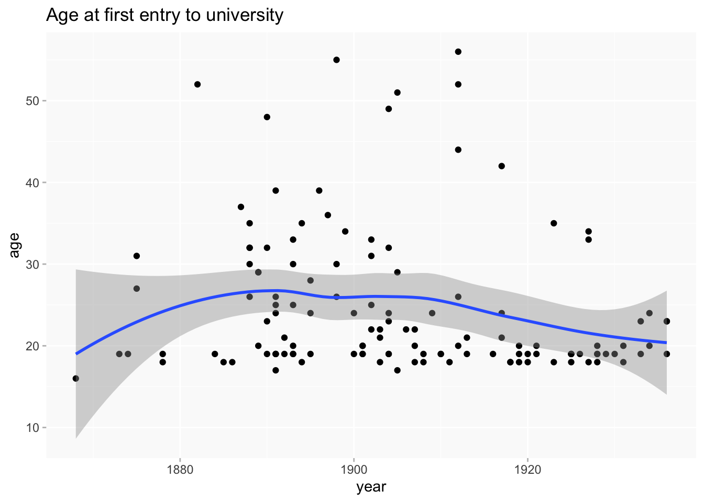
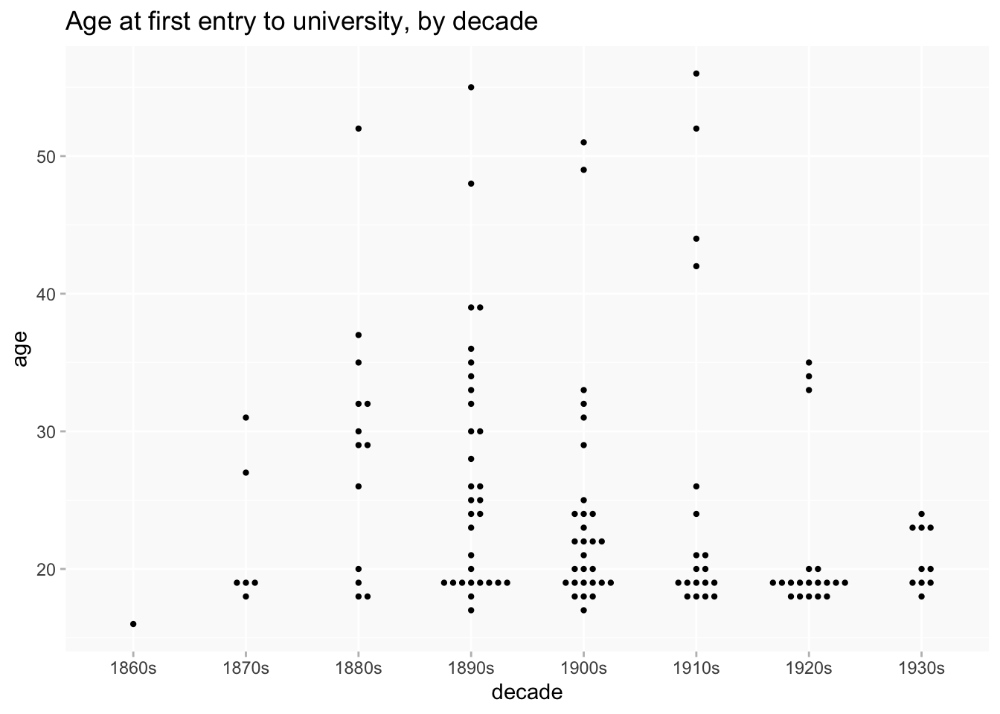

Age and Higher Education
education
Age at which BN women first entered university education
Notes
- Universities and colleges only (eg university extension excluded)
- Wikibase start dates only
- Ages are calculated by subtracting year of birth from starting year, so could be +/- 1 year out
Averages per decade
Scatter chart with trendline

Beeswarm
